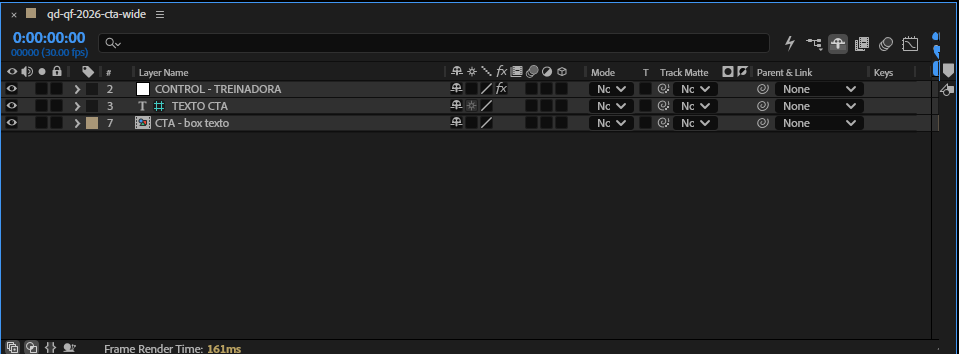
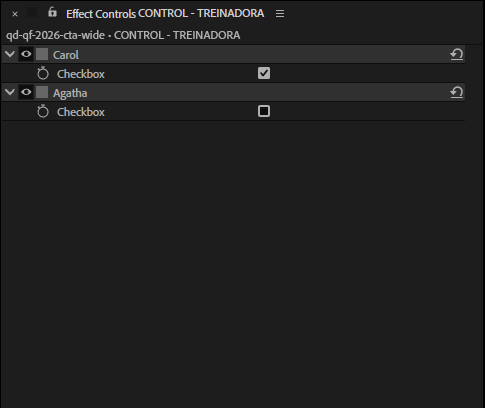
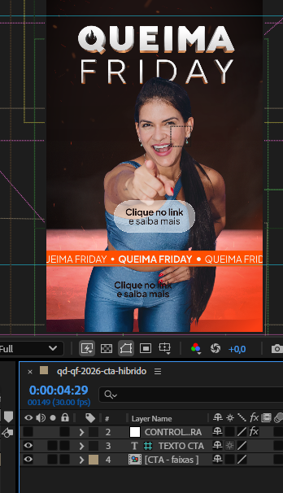
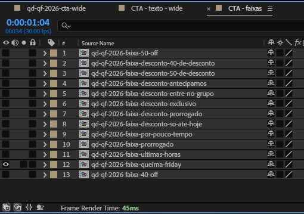

Guia do projeto
Um projeto de After Effects com o CTA da campanha já animado e aprovado. Você escolhe a treinadora, escreve o texto do pop-up e ativa a faixa, sem mexer na animação.
Do arquivo aberto ao vídeo exportado, em cinco etapas.
Abra o arquivo .aep do projeto no After Effects.
Escolha a composição do formato que vai exportar: qd-qf-2026-cta-wide ou qd-qf-2026-cta-hibrido.

No layer CONTROL - TREINADORA, abra a aba Effect Controls e marque o checkbox de quem entra no vídeo: Agatha ou Carol.

No layer TEXTO CTA, insira o texto do pop-up.
Obs.O texto aparece duas vezes no vídeo, só para você ver o que está escrevendo. Ao exportar, aparece apenas o pop-up.
Obs.Ao dar Enter, a linha de baixo fica automaticamente mais fina.

Para alterar a faixa (ex.: “desconto urgente”, “tempo limitado”), entre na composição CTA - faixas e ative a faixa correta.

Duas famílias, ambas gratuitas no Google Fonts.
Manrope
Títulos, preços e “OFF”.
Plus Jakarta Sans
CTA, faixas, selos e textos de apoio.
Disponíveis no caminho:
Nomenclatura dos arquivos exportados.
Um nome por arquivo, sempre com o texto completo do pop-up em minúsculas, separado por traços.